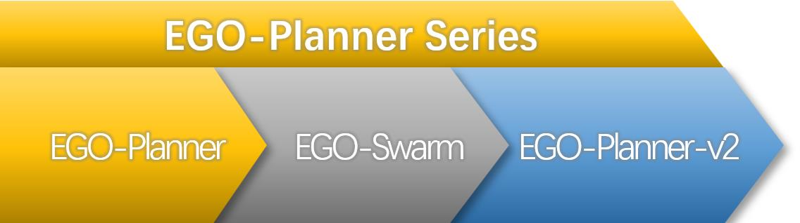

Xin Zhou
I am a doctoral student of FAST Lab at Zhejiang University, China, where I work on aerial robots, autonomous navigation, swarm robotics, and etc. My mentors are Fei Gao and Chao Xu. My dream is to make aerial robots fly freely like a flock of birds.
Email: iszhouxin@zju.edu.cn | Google Scholar | LinkedIn

Awards
Publications
Journal Papers:
- Swarm of micro flying robots in the wild
Xin Zhou, Xiangyong Wen, Zhepei Wang, Yuman Gao, Haojia Li, Qianhao Wang, Tiankai Yang, Haojian Lu, Yanjun Cao, Chao Xu, Fei Gao
Science Robotics (Cover Paper) | paper link | code | videos: YouTube, bilibili
- EGO-Planner: An esdf-free gradient-based local planner for quadrotors
Xin Zhou, Zhepei Wang, Hongkai Ye, Chao Xu, Fei Gao
IEEE Robotics and Automation Letters | paper link | pdf | code | videos: YouTube, bilibili

- Geometrically constrained trajectory optimization for multicopters
Zhepei Wang, Xin Zhou, Chao Xu, Fei Gao
IEEE Transactions on Robotics | paper link | code | videos 1: YouTube, bilibili; videos 2: YouTube, bilibili

- Teach-Repeat-Replan: A complete and robust system for aggressive flight in complex
environments
Fei Gao, Luqi Wang, Boyu Zhou, Xin Zhou, Jie Pan, Shaojie Shen
IEEE Transactions on Robotics | paper link | code | videos: YouTube, bilibili

- Alternating minimization based trajectory generation for quadrotor aggressive flight
Zhepei Wang, Xin Zhou, Chao Xu, Jian Chu, Fei Gao
IEEE Robotics and Automation Letters | paper link | code | videos: YouTube, bilibili
- TGK-Planner: An efficient topology guided kinodynamic planner for autonomous quadrotors
Hongkai Ye, Xin Zhou, Zhepei Wang, Chao Xu, Jian Chu, Fei Gao
IEEE Robotics and Automation Letters | paper link | code | videos: YouTube, bilibili
- Enhanced decentralized autonomous aerial robot teams with group planning
Jialiang Hou, Xin Zhou, Zhongxue Gan, Fei Gao
IEEE Robotics and Automation Letters | paper link | code | videos: YouTube, bilibili
- Unmanned aerial vehicle‐mediated drug delivery for first aid
Tao Sheng, Rui Jin, Changwei Yang, Ke Qiu, Mingyang Wang, Jiaqi Shi, Jingyu Zhang, Yuman Gao, Qing Wu, Xin Zhou, Hao Wang, Juan Zhang, Qin Fang, Neng Pan, Yanan Xue, Yue Wang, Rong Xiong, Fei Gao, Yuqi Zhang, Haojian Lu, Jicheng Yu, Zhen Gu
Advanced Materials | paper link
Conference Papers:
- EGO-Swarm: A fully autonomous and decentralized quadrotor swarm system in cluttered
environments
Xin Zhou, Jiangchao Zhu, Hongyu Zhou, Chao Xu, Fei Gao
International Conference on Robotics and Automation (ICRA) | paper link | code | videos: YouTube, bilibili

- Automatic parameter adaptation for quadrotor trajectory planning
Xin Zhou, Chao Xu, Fei Gao
International Conference on Intelligent Robots and Systems (IROS) | paper link | code | videos: bilibili
- CMPCC: Corridor-based model predictive contouring control for aggressive drone flight
Jialin Ji*, Xin Zhou*, Chao Xu, Fei Gao (*Equal Contribution)
International Symposium on Experimental Robotics (ISER) | paper link | code | videos: YouTube, bilibili
Codes

EGO-Planner
 XXXXXXXXXXXXXXXXXXXXXX
XXXXXXXXXXXXXXXXXXXXXX
EGO-Swarm

EGO-Planner-v2

Comments
Acknowledgement: the page is built on this repo.